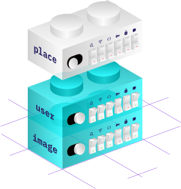

Template engine for CRUD operations
Hapify automates the writing of CRUD operations for back-end and front-end development.
Focus only on business features instead of doing repetitive work!

Hapify automates the writing of CRUD operations for back-end and front-end development.
Focus only on business features instead of doing repetitive work!